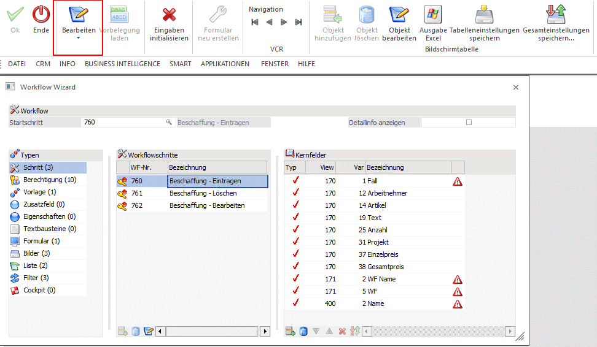
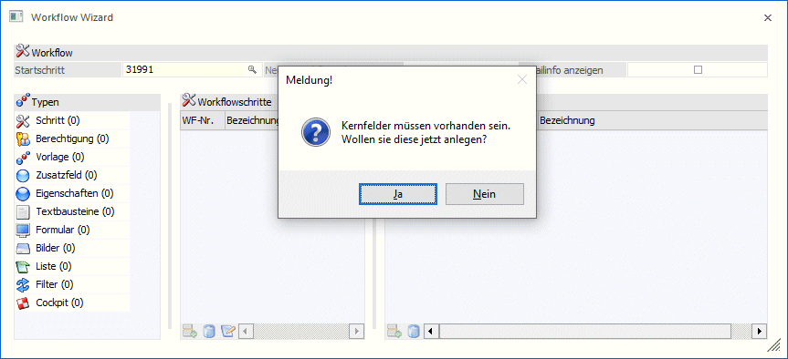
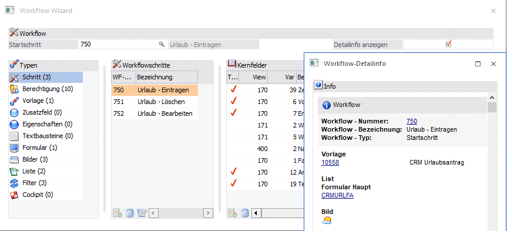
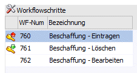
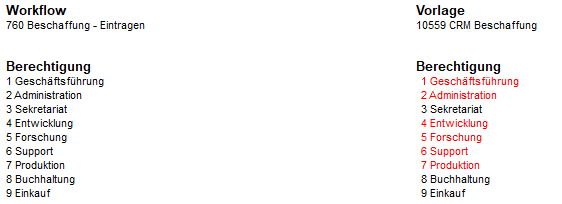
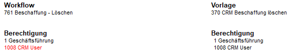
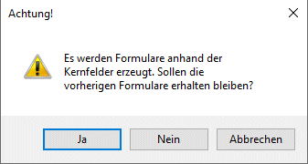
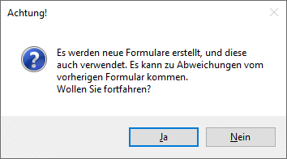
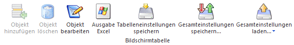

Im Modus "Bearbeiten" können bestehende Workflows - im konkreten die zugehörigen Objekte - bearbeitet werden, bzw. muss dieser Modus gewählt werden, um bestehende Workflows und Objekte bearbeiten zu können.
Des Weiteren können in diesem Modus CRM-Formulare im "neuen" Design erzeugt werden, bzw. FORM-Ansichten (im Bereich "Vorlagen" und "Formulare") bearbeitet werden.

Ø Startschritt
Um einen Workflow zu bearbeiten, muss dessen Startschritt angegeben werden. Zur Suche nach Startschritten steht der Workflow-Matchcode zur Verfügung.
Hinweis:
Handelt es sich beim gewählten Startschritt um einen Schritt der keine Vorlage bzw. keine Kernfelder hinterlegt hat, so wird dies mit einer eigenen Meldung dargestellt:

Wird die Meldung mit "Nein" bestätigt, so wird die Eingabemaske initialisiert und es kann ein neuer Workflowschritt angegeben werden.
Wird die Meldung mit "Ja" bestätigt, so wechselt das Programm in den Modus "Neu" wo der Workflowschritt (inkl. event. vorhandener Folgeschritte) zur weiteren Bearbeitung (Definition von Kernfeldern) angezeigt wird.
Ø Detailinfo anzeigen
Durch Aktivieren dieser Option werden zusätzliche Details zum jeweils gewählten Objekt in einem eigenen Fenster dargestellt.

Zum Bearbeiten eines Objektes muss der entsprechende Objekttyp angewählt, und in weiterer Folge das Objekt selbst in der mittleren Tabelle gewählt werden. Anschließend kann die Bearbeitung durch Anwählen des Buttons "Objekt bearbeiten" gestartet werden.
Ø Objekttyp "Schritt"
Wird der Objekttyp "Schritt" angewählt, so werden in der mittleren Tabellen die entsprechenden Workflowschritte angezeigt. Dadurch dass der Focus auf den ersten vorhandenen Workflowschritt gesetzt wird, wird auch der Button "Objekt bearbeiten" freigeschalten. Wird dieser angewählt, so wird der Workflow-Editor aufgerufen und der Workflowschritt zur Bearbeitung dargestellt.
In der Tabelle der angezeigten Schritte wird mittels eigenem Symbol angezeigt, ob es unterschiedliche Berechtigungen (hinterlegte Systemgruppen) zwischen Workflowschritt und verwendeter Vorlage gibt:

Durch einen Doppelklick auf das jeweilige Symbol wird eine Auflistung dazu geöffnet.
ü Rotes Symbol
Im Workflowschritt
sind mehr Systemgruppen berechtigt als in der hinterlegten
CRM-Vorlage.

ü Grünes Symbol
In der
hinterlegten CRM-Vorlage sind mehr Systemgruppen berechtigt als im
Workflowschritt.

ü Kein Symbol
Im Workflowschritt
sind die gleichen Systemgruppen berechtigt wie in der hinterlegten
CRM-Vorlage.
Ø Objekttyp "Berechtigungen"
Keine Bearbeitung möglich, da dies direkt im Workflowschritt (Workflow-Editor) erfolgt.
Ø Objekttyp "Vorlage"
Wird der Objekttyp "Vorlage" angewählt, so werden in der mittleren Tabelle die entsprechenden Vorlagen (indiv. CRM-Formulare) angezeigt. Dadurch dass der Focus auf die erste vorhandene Vorlage gesetzt wird, wird auch der Button "Objekt bearbeiten" freigeschalten. Wird dieser angewählt, so wird die gewählte Vorlage in der Vorlagen-Anlage zur Bearbeitung geöffnet.
Ebenso wird durch Setzen des Focus auf eine vorhandene Vorlage der Button "FORM-Ansicht bearbeiten" freigeschalten. Durch Anwählen des Buttons wird in den FORM-Designer gewechselt und die Vorlage in der FORM-Ansicht dargestellt.
Ø Objekttyp "Zusatzfeld"
Wird der Objekttyp "Zusatzfeld" angewählt, so werden in der mittleren Tabelle die entsprechenden Zusatzfelder angezeigt. Dadurch dass der Focus auf das erste vorhandene Zusatzfeld gesetzt wird, wird auch der Button "Objekt bearbeiten" freigeschalten. Wird dieser angewählt, so wird das gewählte Zusatzfeld im Zusatzfelderstamm zur Bearbeitung geöffnet.
Ø Objekttyp "Eigenschaften"
Wird der Objekttyp "Eigenschaften" angewählt, so werden in der mittleren Tabelle die entsprechenden Eigenschaften angezeigt. Dadurch dass der Focus auf die erste vorhandene Eigenschaft gesetzt wird, wird auch der Button "Objekt bearbeiten" freigeschalten. Wird dieser angewählt, so wird die gewählte Eigenschaft im Eigenschaftenstamm geöffnet.
Ø Objekttyp "Textbausteine"
Wird der Objekttyp "Textbausteine" angewählt, so werden in der mittleren Tabelle die entsprechenden Textbausteine angezeigt. Dadurch dass der Focus auf den ersten vorhandenen Textbaustein gesetzt wird, wird auch der Button "Objekt bearbeiten" freigeschalten. Wird dieser angewählt, so wird der gewählte Textbaustein im Textbausteinestamm geöffnet.
Ø Objekttyp "Formular"
Wird der Objekttyp "Formular" angewählt, so werden in der mittleren Tabelle die entsprechenden Formulare angezeigt. Dadurch dass der Focus auf das erste vorhandene Formular gesetzt wird, wird auch der Button "Objekt bearbeiten" freigeschalten. Wird dieser angewählt, so wird das gewählte Formular im Formular Editor zur Bearbeitung geöffnet.
Zusätzlich steht der Button "Formular neu erstellen" zur Verfügung. Wird dieser Button gedrückt, so werden neue Formulare zur Fallansicht (Hauptformular) bzw. zur Darstellung der Schritte (Subformular) erstellt.
Folgende Ausgangssituationen können vorliegen:
1) Ist bereits ein Formular zur Darstellung des CRM-Falles aus einer WinLine-Version < 12 vorhanden, und handelt es sich dabei noch um das "alte" Design", so bleibt das bereits vorhandene Formular bei Drücken des Buttons unangetastet, und die Formulare werden im neuen Design erstellt und bei den jeweiligen Schritten hinterlegt.
Der "Formularname" setzt sich dabei wie folgt zusammen:
CRM-Hauptformular: CRM_FA_Name-des-vorhandenen-Formulares_Mandantennummer_Schrittnummer
CRM-Subformular: CRM_SUB_Name-des-vorhandenen-Formulares_Mandantennummer_Schrittnummer
2) Ist in einem Workflow der in einer WinLine-Version < 12 erstellt wurde noch kein Formular zur Darstellung des CRM-Falles vorhanden, so werden bei Drücken des Buttons die entsprechenden Formulare im neuen Design erstellt und bei den jeweiligen Schritten hinterlegt.
Der "Formularname" setzt sich dabei wie folgt zusammen:
CRM-Hauptformular: CRM_FA_CRMFA_Mandantennummer_Schrittnummer
CRM-Subformular: CRM_SUB_CRMSUB_Mandantennummer_Schrittnummer
3) Wurden CRM-Formulare im Zuge der Anlage von Workflowschritten im Workflow-Wizard erzeugt, so stehen durch Drücken des Buttons 3 Möglichkeiten zur Verfügung:

ü Ja: die bestehenden Formulare bleiben erhalten und es werden neue Formulare erzeugt. Diese erhalten die Erweiterung "_1".
ü Nein: die hinterlegten Formulare werden aktualisiert
ü Abbrechen: das Erzeugen der Formulare wird abgebrochen
Ebenso wird durch Setzen des Focus auf ein vorhandenes Formular der Button "FORM-Ansicht bearbeiten" freigeschalten. Durch Anwählen des Buttons wird in den FORM-Designer gewechselt und das Formular in der FORM-Ansicht dargestellt.
Ø Objekttyp "Bilder"
Keine Bearbeitung möglich, da dies direkt im Workflowschritt (Workflow-Editor) erfolgt.
Ø Objekttyp "Liste"
Wird der Objekttyp "Liste" angewählt, so werden in der mittleren Tabelle die entsprechenden CRM-LIST-Liste angezeigt. Dadurch dass der Focus auf die erste vorhandene Liste gesetzt wird, wird auch der Button "Objekt bearbeiten" freigeschalten. Wird dieser angewählt, so wird die gewählte Liste im LIST-Assistenten geöffnet.
Ø Objekttyp "Filter"
Wird der Objekttyp "Filter" angewählt, so werden in der mittleren Tabelle die entsprechenden CRM-LIST-Filter angezeigt. Dadurch dass der Focus auf den ersten vorhandenen Filter gesetzt wird, wird auch der Button "Objekt bearbeiten" freigeschalten. Wird dieser angewählt, so wird der gewählte Filter im Filter-Assistenten geöffnet.
Ø Objekttyp "Cockpit"
Wird der Objekttyp "Cockpit" angewählt, so wird in der mittleren Tabelle das entsprechende Cockpit, bzw. werden in der mittleren Tabellen die entsprechenden Cockpits angezeigt. Dadurch dass der Focus auf das erste vorhandene Cockpit gesetzt wird, wird auch der Button "Objekt bearbeiten" freigeschalten. Wird dieser angewählt, so wird das gewählte Cockpit in der Cockpit Definition zur Bearbeitung geöffnet.
Ø Ok
Im Modus "Bearbeiten" nicht aktiv.
Ø Ende
Durch Anwählen des Ende-Buttons wird der Menüpunkt geschlossen.
Ø Bearbeiten / Neu / Export / Import / Kopieren
Auswahl des gewünschten Modus
Ø Vorbelegung laden
Im Modus "Bearbeiten" nicht aktiv.
Ø Eingaben initialisieren
Durch Drücken dieses Buttons werden alle Eingaben initialisiert, d.h. der Status des Menüpunktes dahingehend zurückgesetzt, als wäre der Menüpunkt neu geöffnet worden.
Dieser Button wird aktiv, wenn in der Tabelle der Objekttypen der Eintrag "Formular" angewählt ist.
Wird dieser Button gedrückt, so werden neue Formulare zur Fallansicht (Hauptformular) bzw. zur Darstellung der Schritte (Subformular) automatisch erstellt. Hierbei werden die Kernfelder pro CRM-Schritt geprüft, und die entsprechenden (Sub-) Formulare dazu angelegt.
Folgende Ausgangssituationen können vorliegen:
1) Ist bereits ein Formular zur Darstellung des CRM-Falles aus einer WinLine-Version < 12 vorhanden, und handelt es sich dabei noch um das "alte" Design", so bleibt das bereits vorhandene Formular bei Drücken des Buttons unangetastet, und die Formulare werden im neuen Design erstellt und bei den jeweiligen Schritten hinterlegt.
Der "Formularname" setzt sich dabei wie folgt zusammen:
CRM-Hauptformular: CRM_FA_Name-des-vorhandenen-Formulares_Mandantennummer_Schrittnummer
CRM-Subformular: CRM_SUB_Name-des-vorhandenen-Formulares_Mandantennummer_Schrittnummer
2) Ist in einem Workflow der in einer WinLine-Version < 12 erstellt wurde noch kein Formular zur Darstellung des CRM-Falles vorhanden, so werden bei Drücken des Button die entsprechenden Formulare im neuen Design erstellt und bei den jeweiligen Schritten hinterlegt.
Der "Formularname" setzt sich dabei wie folgt zusammen:
CRM-Hauptformular: CRM_FA_CRMFA_Mandantennummer_Schrittnummer
CRM-Subformular: CRM_SUB_CRMSUB_Mandantennummer_Schrittnummer
Vor der Umstellung bzw. vor dem Erzeugen neuer Formulare muss dazu die entsprechende Meldung bestätigt werden.

3) Wurden CRM-Formulare im Zuge der Anlage von Workflowschritten im Workflow-Wizard erzeugt, so stehen durch Drücken des Buttons 3 Möglichkeiten zur Verfügung:
ü Ja: die bestehenden Formulare bleiben erhalten und es werden neue Formulare erzeugt. Diese erhalten die Erweiterung "_1".
ü Nein: die hinterlegten Formulare werden aktualisiert
ü Abbrechen: das Erzeugen der Formulare wird abgebrochen
Ø VCR-Buttons
Über die so genannten VCR-Buttons kann zwischen den Datensätzen/Workflow-Startschritten geblättert werden.
Tabellenbuttons

Ø Objekt hinzufügen
Steht im Bearbeiten-Modus nicht zur Verfügung.
Ø Objekt löschen
Steht im Bearbeiten-Modus nicht zur Verfügung.
Ø Objekt bearbeiten
Zur Bearbeitung einzelner Objekte muss dieser Button angewählt werden.
Ø Ausgabe Excel
Durch Anwahl des Buttons "Ausgabe Excel" wird der Inhalt der Tabelle nach Microsoft Excel übergeben.
Ø Tabelleneinstellungen speichern
Die Spalten einer Tabelle können grundsätzlich an beliebige Positionen verschoben, bzw. in der Breite entsprechend angepasst werden. Durch Anwahl des Buttons "Tabelleneinstellungen speichern" werden die Einstellungen benutzerspezifisch gespeichert und bei dem nächsten Aufruf des Programmpunktes wieder vorgeschlagen.
Ø Gesamteinstellungen speichern…
Im Gegensatz zu "Tabelleneinstellungen speichern" können mit "Gesamteinstellungen speichern" mehrere Tabellenaufbauten gespeichert und nach Wunsch geladen werden. Zusätzlich werden Sonderfunktionen der Tabelle (z.B. "Spalte gruppieren") ebenfalls bei der Speicherung bedacht.